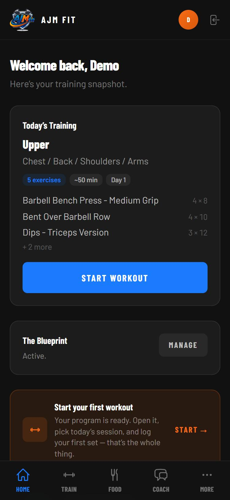
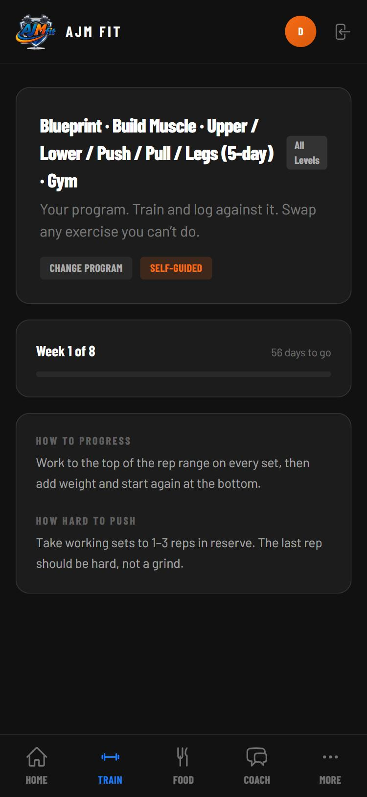
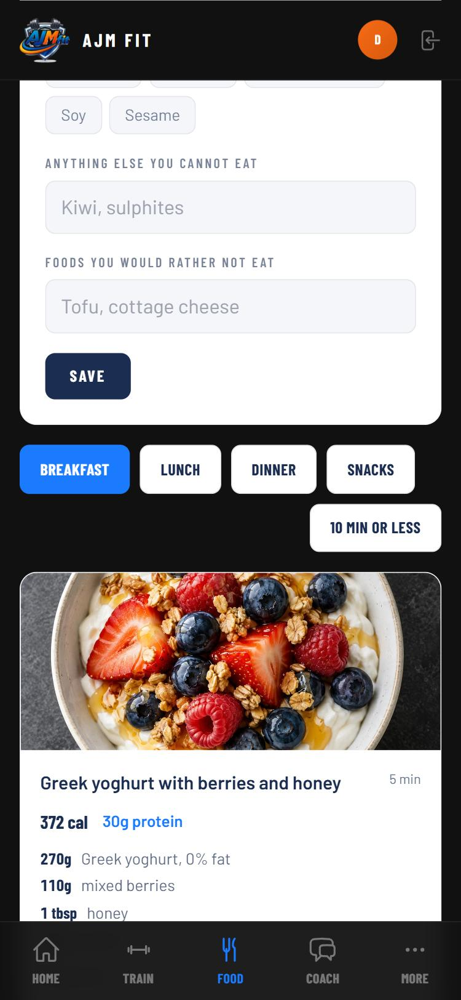

Personal
training
that counts
training
that counts
Every set. Every meal. Every week.
Open it. Today’s
session is ready.
session is ready.
No planning. Just press start.

68 programs.
Pick in three taps.
Pick in three taps.
2 to 6 days. Gym or dumbbells at home.

Meals that fit
your numbers.
your numbers.
Real portions, weighed. Not guesswork.

Start today
ajmfit.com
Coached by Anthony